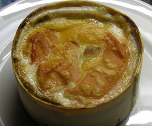

Vacherin Mont d'Or
4,5 von 6einen vacherin käse mit einer gabel einstechen. in alufolie einpacken und mit einem dl weisswein (epesses) übergiessen. bei 200 grad ca. 20 min im ofen überbacken.

einen vacherin käse mit einer gabel einstechen. in alufolie einpacken und mit einem dl weisswein (epesses) übergiessen. bei 200 grad ca. 20 min im ofen überbacken.

Montagsplausch Nr. 119.